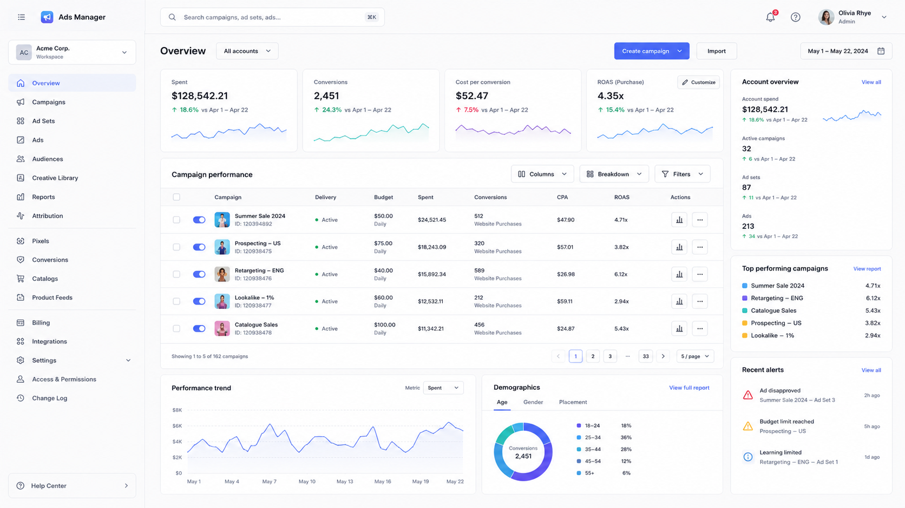
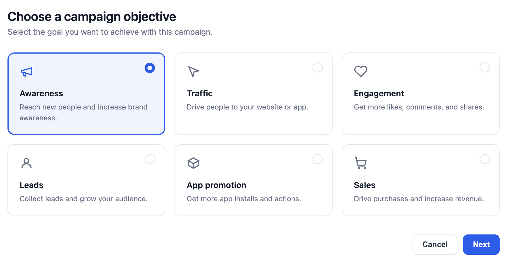
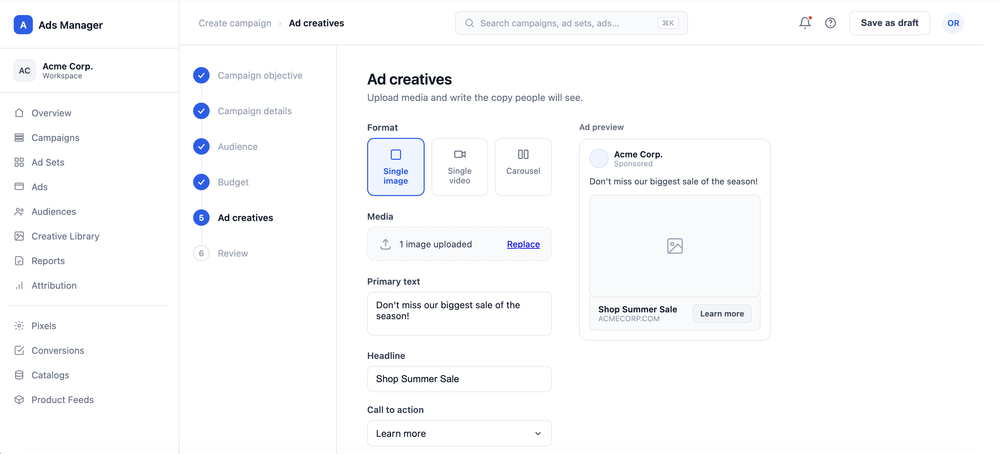
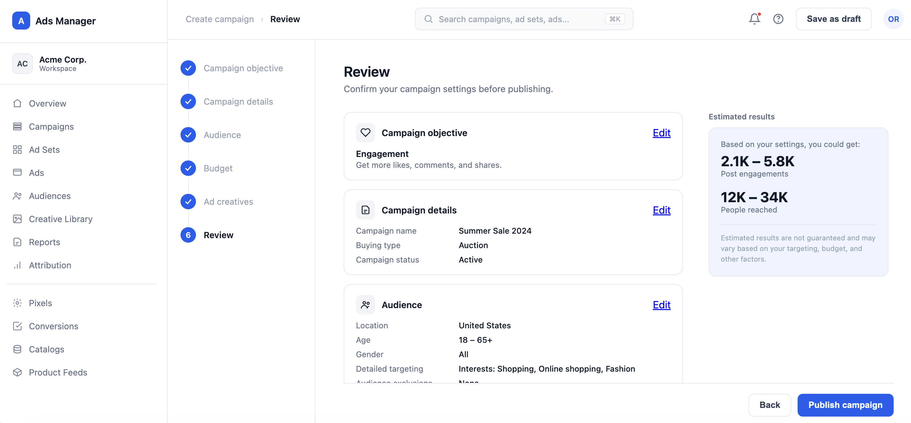

<!DOCTYPE html>
<html></html>
    <head>
        <meta charset="utf-8">
        <meta http-equiv="X-UA-Compatible" content="IE=edge">
        <meta name="viewport" content="width=device-width"/>
        <title>Peter An-Designer</title>
        <link rel="stylesheet" href="cloud.css">
        <link rel="stylesheet" href="../owl-carousel/owl.carousel.css">
        <link rel="stylesheet" href="../owl-carousel/owl.theme.css">
    </head>

    <body>
            <header class="head">
           <a href="../index.html"><h5>pete rivers an • design + product</h5></a>
            <!-- <h5 class="end"><a href="archive.html">Archive</a></h5> -->
        </header>

        <div class="container">
        <div id="owl-demo" class="owl-carousel owl-theme">
            <div class="item"></div>
           
<!--
            <div class="item">
            </div>
-->

</div>

            <div class="text">
        <div class="descript">
            <p><b>PROJECT OVERVIEW:</b> This project explores how to simplify a complex internal ads management tool while preserving the flexibility power users need. As the platform grew, navigation, filters, and settings became increasingly dense and difficult to distinguish. I redesigned the experience around clearer hierarchy, progressive disclosure, and more predictable configuration flows. The result is a more scalable system that makes complex workflows easier to understand and manage.</p>
        </div>
        <div class="info">
        <p><span>Project Name : META Ad Cloud</span></p>
             <p><span>Type : UX, Product, User Flow</span></p>
             <p><span>Tools Used : Figma, Figma Make, Miro,</span></p>
            </div>
        </div>

<section class="">
<div>
    <h2>Problem</h2>
    <p>Creating a campaign requires committing budget and reaching real audiences, so the stakes of a mistake are high. The existing flow created three key challenges:


        <div>
        <ul>• Each step surfaced too many decisions at once, competing for attention on a single screen.</ul>
        <ul>• Users had no reliable way to confirm all six steps of configuration before publishing, increasing the risk of costly errors.</ul>
        <ul>• There was no visibility into the impact of a decision (like budget or audience) until after the campaign was already live.</ul>
        </div>

    </p>
</div>
<div>
    <h2>Observations</h2>
    <p>Setting up a campaign is a sequential decision-making process, not a dashboard to scan. Power users move through it often, so speed matters, but each step (objective, budget, audience) carries enough weight that cramming choices together increases error risk. I organized the flow around three questions: What am I trying to achieve? (objective and details), Who and how much? (audience and budget), and Is this ready to go live? (creatives and review). This kept each screen focused on a single decision while still preserving a clear path forward and back.</p>
</div>
<!-- <div class="body-img">

</div>
 -->
<div>
    <h2>Tasks & Actions</h2>
    <p>
        <h4>01. Establish a persistent step structure</h4>

I introduced a fixed six-step progress list — Campaign objective, Campaign details, Audience, Budget, Ad creatives, Review — always visible on the left. Completed steps are marked, the active step is highlighted, and users can jump back to any prior step without losing progress. This gives users constant orientation in a process that used to feel open-ended.

<div class="body-img">

</div>


<h4>02. Simplify objective selection into a single, scannable decision</h4>

The first step reduces campaign creation to one choice: a grid of objective cards (Awareness, Traffic, Engagement, Leads, App promotion, Sales), each with an icon and a one-line description of the outcome. This turns an abstract decision into a concrete, visual comparison rather than a dropdown of jargon.


<h4>03. Group budget controls by decision, not by field</h4>

Rather than listing every budget field flatly, I organized the Budget step around the decisions users actually make in sequence: budget type (daily vs. lifetime), amount, schedule, and bidding strategy. Recommended options (like Automatic bidding) are pre-selected and explained inline, so default paths stay fast while advanced users can still override every value.

<div class="body-img">

</div>


<h4>04. Consolidate review into one confirmable summary</h4>

The final step surfaces every prior decision — objective, details, audience, budget, ad creatives — as individually editable summary cards, so users can verify the full campaign in one place instead of clicking back through six screens. An estimated results panel (reach and engagement ranges) sits alongside the summary, giving users a directional sense of impact before they commit spend, with a clear disclaimer that results aren't guaranteed.
</p>

<div class="body-img">

</div>

<h4>05. Connect the flow back to performance</h4>

Once published, campaigns surface in the Overview dashboard with spend, conversions, cost per conversion, and ROAS tracked against the prior period, plus a per-campaign performance table. This closes the loop: the same structure used to build a campaign (objective, budget, audience) is the structure used to evaluate it afterward, reinforcing a consistent mental model across the tool.
</p>

</div>

<div class="bottom">
    <h2>Concluding Thoughts</h2>
    <p>This exploration reinforced that a creation flow for an infrastructure-grade tool doesn't need to feel dense to support real depth. By giving each step a single clear decision, keeping progress persistent, and consolidating everything into one reviewable summary before publish, the flow reduces the chance of costly setup errors without stripping away the control experienced advertisers expect. The step structure also scales: new objectives or budget models can be added within an existing step rather than requiring a new information architecture.</p>
</div>
</section>


    </div>
    


    <!-- <footer>
          <h5 class="footer-links"><a href="https://medium.com/@peetparkaa" class="foot-1">scripts</a></h5>
        </footer> -->

    <script src="https://ajax.googleapis.com/ajax/libs/jquery/1.12.0/jquery.min.js">
</script>
<script src="../owl-carousel/owl.carousel.js"></script>

<script>
    $(document).ready(function() {
  $("#owl-demo").owlCarousel({

      navigation : true, // Show next and prev buttons
      slideSpeed : 300,
      paginationSpeed : 400,
      singleItem:true
  });
});
    </script>
    </body>
</html>
